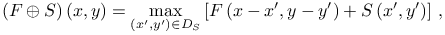
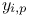
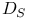
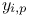
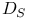
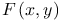
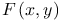

Non-maximum suppression
Non-maximum suppression [] is a way to eliminate all image information that is not part of the local intensity maxima by setting all non-maximal pixels to zero. Our implementation is based on morphological gray-scale dilation [] defined by the formula
|  | (1) |
where  is an input image,  is a structuring element, and 
is the domain of . Gray-scale dilation is a more general approach
than the method of detection of local intensity maxima,
because the structuring element can have an arbitrary form.
is an input image,  is a structuring element, and 
is the domain of . Gray-scale dilation is a more general approach
than the method of detection of local intensity maxima,
because the structuring element can have an arbitrary form.
We first perform a gray-scale dilation of the input image using a
structuring element of size  with all entries set to zero,
where  is a dilation radius given by the user. The approximate
molecular positions are extracted by finding pixels in the original
image that have intensities equal to corresponding pixels in the dilated
image and also have an intensity greater than a user-specified threshold.
Essentially, a binary image is built with all non-maximum pixels set
to zero and with all local maxima set to one.
with all entries set to zero,
where  is a dilation radius given by the user. The approximate
molecular positions are extracted by finding pixels in the original
image that have intensities equal to corresponding pixels in the dilated
image and also have an intensity greater than a user-specified threshold.
Essentially, a binary image is built with all non-maximum pixels set
to zero and with all local maxima set to one.
Threshold
Only local maxima with intensity higher than a threshold value are used as molecule candidates. Threshold can be specified as a fixed number or a formula containing image statistics. See Threshold for more information.
![[LOGO]]()